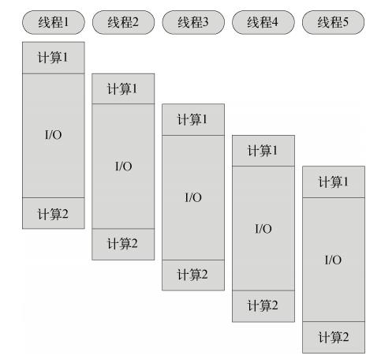
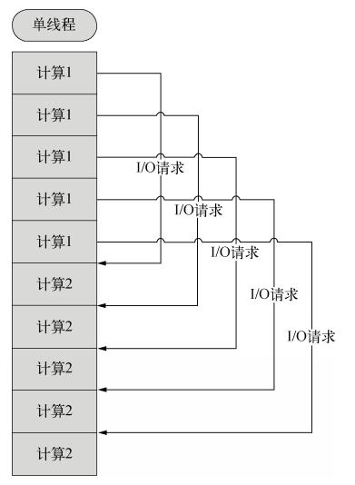
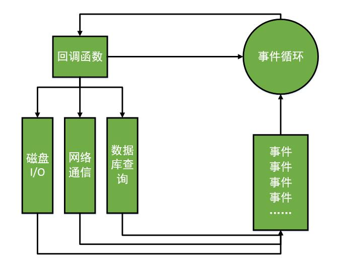
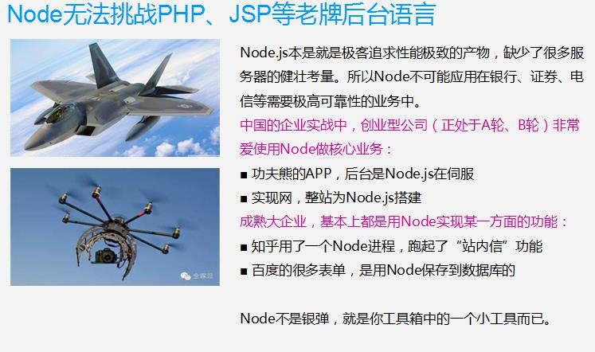

一、Node.js简介
1.1 简介
V8引擎本身就是用于Chrome浏览器的JS解释部分，但是Ryan Dahl（瑞恩达尔）这哥们，鬼才般的，把这个V8搬到了服务器上，用于做服务器的软件。
Node.js是一个专注于实现高性能Web服务器优化的专家，几经探索，几经挫折后，遇到V8而诞生的项目。
Node.js是一个让JavaScript运行在服务器端的开发平台，它让JavaScript的触角伸到了服务器端，可以与PHP、JSP、Python、Ruby平起平坐。
但Node似乎有点不同：
● Node.js不是一种独立的语言，与PHP、JSP、Python、Perl、Ruby的“既是语言，也是平台”不同，Node.js的使用JavaScript进行编程，运行在JavaScript引擎上（V8）。
● 与PHP、JSP等相比（PHP、JSP、.net都需要运行在服务器程序上，Apache、Naginx、Tomcat、IIS。
），Node.js跳过了Apache、Naginx、IIS等HTTP服务器，它自己不用建设在任何服务器软件之上。Node.js的许多设计理念与经典架构（LAMP = Linux + Apache + MySQL + PHP）有着很大的不同，可以提供强大的伸缩能力。一会儿我们就将看到，Node.js没有web容器。
Node.js自身哲学，是花最小的硬件成本，追求更高的并发，更高的处理性能。
官网：https://nodejs.org/en/
特点：Node.js uses an event-driven, non-blocking I/O model that makes it lightweight and efficient.
1.2 特点
所谓的特点，就是Node.js是如何解决服务器高性能瓶颈问题的。
单线程
在Java、PHP或者.net等服务器端语言中，会为每一个客户端连接创建一个新的线程。而每个线程需要耗费大约2MB内存。也就是说，理论上，一个8GB内存的服务器可以同时连接的最大用户数为4000个左右。要让Web应用程序支持更多的用户，就需要增加服务器的数量，而Web应用程序的硬件成本当然就上升了。
Node.js不为每个客户连接创建一个新的线程，而仅仅使用一个线程。当有用户连接了，就触发一个内部事件，通过非阻塞I/O、事件驱动机制，让Node.js程序宏观上也是并行的。使用Node.js，一个8GB内存的服务器，可以同时处理超过4万用户的连接。
另外，带线程的带来的好处，还有操作系统完全不再有线程创建、销毁的时间开销。
坏处，就是一个用户造成了线程的崩溃，整个服务都崩溃了，其他人也崩溃了。
 
多线程、单线程的一个对比。
也就是说，单线程也能造成宏观上的“并发”。非阻塞I/O non-blocking I/O
例如，当在访问数据库取得数据的时候，需要一段时间。在传统的单线程处理机制中，在执行了访问数据库代码之后，整个线程都将暂停下来，等待数据库返回结果，才能执行后面的代码。也就是说，I/O阻塞了代码的执行，极大地降低了程序的执行效率。
由于Node.js中采用了非阻塞型I/O机制，因此在执行了访问数据库的代码之后，将立即转而执行其后面的代码，把数据库返回结果的处理代码放在回调函数中，从而提高了程序的执行效率。
当某个I/O执行完毕时，将以事件的形式通知执行I/O操作的线程，线程执行这个事件的回调函数。为了处理异步I/O，线程必须有事件循环，不断的检查有没有未处理的事件，依次予以处理。
阻塞模式下，一个线程只能处理一项任务，要想提高吞吐量必须通过多线程。而非阻塞模式下，一个线程永远在执行计算操作，这个线程的CPU核心利用率永远是100%。所以，这是一种特别有哲理的解决方案：与其人多，但是好多人闲着；还不如一个人玩命，往死里干活儿。事件驱动event-driven
在Node中，客户端请求建立连接，提交数据等行为，会触发相应的事件。在Node中，在一个时刻，只能执行一个事件回调函数，但是在执行一个事件回调函数的中途，可以转而处理其他事件（比如，又有新用户连接了），然后返回继续执行原事件的回调函数，这种处理机制，称为“事件环”机制。
Node.js底层是C++（V8也是C++写的）。底层代码中，近半数都用于事件队列、回调函数队列的构建。用事件驱动来完成服务器的任务调度，这是鬼才才能想到的。针尖上的舞蹈，用一个线程，担负起了处理非常多的任务的使命。

单线程，单线程的好处，减少了内存开销，操作系统的内存换页。
如果某一个事情，进入了，但是被I/O阻塞了，所以这个线程就阻塞了。
非阻塞I/O， 不会傻等I/O语句结束，而会执行后面的语句。
非阻塞就能解决问题了么？比如执行着小红的业务，执行过程中，小刚的I/O回调完成了，此时怎么办？？
事件机制，事件环，不管是新用户的请求，还是老用户的I/O完成，都将以事件方式加入事件环，等待调度。
说是三个特点，实际上是一个特点，离开谁都不行，都玩儿不转了。
Node.js很像抠门的餐厅老板，只聘请1个服务员，服务很多人。结果，比很多服务员效率还高。
Node.js中所有的I/O都是异步的，回调函数，套回调函数。
1.3 适合开发什么？
Node.js适合用来开发什么样的应用程序呢？
善于I/O，不善于计算。因为Node.js最擅长的就是任务调度，如果你的业务有很多的CPU计算，实际上也相当于这个计算阻塞了这个单线程，就不适合Node开发。
当应用程序需要处理大量并发的I/O，而在向客户端发出响应之前，应用程序内部并不需要进行非常复杂的处理的时候，Node.js非常适合。Node.js也非常适合与web socket配合，开发长连接的实时交互应用程序。
比如：
● 用户表单收集
● 考试系统
● 聊天室
● 图文直播
● 提供JSON的API（为前台Angular使用）
1.4 Node.js无法挑战老牌3P
